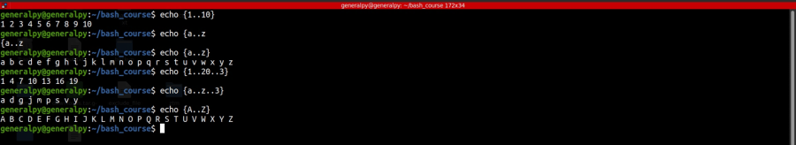
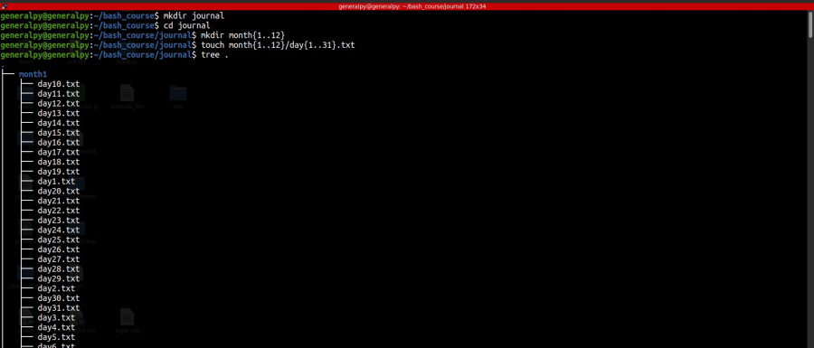

Brace expansion can be used to generate text based on a pattern. These come in handy when dealing with text that follow a same pattern.
There are 2 types of brace expansions :
String expansion where we expand according to a specific string sequence/ string list.
Range expansion where we expand according to a range/range list like 1 to 10, a to z etc which gives ease of use with limited use power.
As name suggest brace expansion uses curly braces.
To use string lists, we can write anything between curly braces separated by commas.
We cannot have unquoted space in between items and commas.
Now, string list are very flexible when used with different types of data but it becomes troublesome to use string expansion with data with a pattern.
Like to generate numbers from 1 to 10 we have to use {1,2,3,4,5,6,7,8,9,10} when using string expansion.
We can easily generate related sequences with range expansion. To use a range expansion, put start position and then .. followed by end position.
We can also add a 3rd value which can be step and works both on numerical and non numerical types.
Range exapsion cannot generate sequences like months. No space is allowed between dots and values. We can also add 0 before start value for numeric types so that values are evenly placed(output will be like 01, 02 ,03 etc).

Lets see an use case of brace expansion. Imagine we are planning to create a journal to log everything that happens in our day. We can easily create directories and files required for that using brace expansion.
